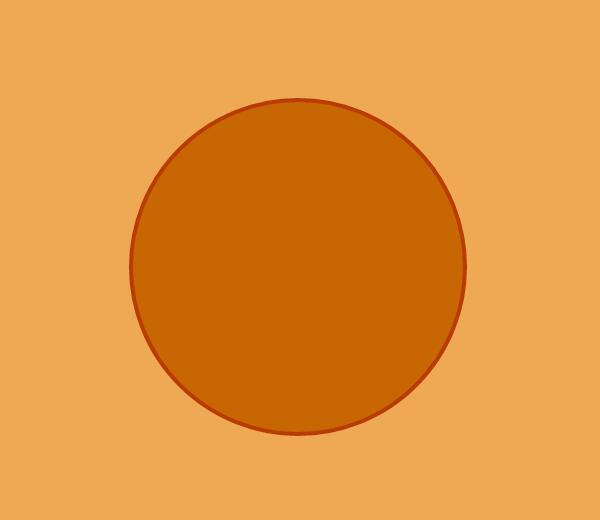
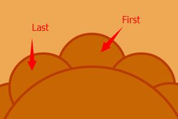

Draw a Mooncake with CSS3
Drawing with CSS3 isn't something new. Many developers have tried it. But for me this is the first time. So while it's Mid-Autumn Festival, let's try draw a mooncake.
PS: Considering i'm not Art majored, please forgive my terrible drawing skill.
PPS: It's highly recommended that you try this on a Chrome (or any other browser have good support for CSS3) for best experience.
Basic Structure
The mooncake have 4 parts: the body, small decorative circles around the body, textures on top, text in the center.
The body
Using border-radius to draw a circle is oone of the basic skills in CSS3 drawing.
.main{
width: 300px;
height: 300px;
border-radius: 50%;
background-color: #C76603;
border: 4px solid #BA3B00;
}
<div class="main"></div>I've set the background div as position: relative;, so everything inside of it can be absolutely positioned. We gonna use quite a lot of absolute position in CSS3 drawing.
Decorative circles
The decorative circles are also circles, just smaller. For calculation convenience, I wrote 12 of them. The real mooncakes, of course, have way more than that. I'm just being lazy here. becaurse CSS3 has no expression. By using JavaScript, or extensions like LESS,SCSS,SASS, we can easily control the amount and have as many as we want.
Each small circle is position absolutely. By calculating the center coordinates of the circle with trigonometric, we know their positions. Be awared, the center coordinates of small circles are not the final coordinates we need because of the box model. We need to loose the radius to get the coordinates of the top-left corner.

The small circles are overlayed. You might have found that part of the first small circle is covered by the last one, which is not what we want. Here we gonna solve it by a little tricks.
First we need to get the first small circle on top. Make a copy of the first small circle. Use border-radius to make is a semi-circle. And Ta-Da! the left part came to life again. (here I did a little change on color and layer relationship for better understanding)
.ear.index12 {
height: 100px;
width: 50px;
border-radius: 50px 0 0 50px;
}
<!--div.ear.index 0-11-->
<div class="ear index12"></div>

But with the old problem solved, comes a new one. There's a verticle line in the middle of the first small circle. There are two ways to solve this. One is to set border-right-color: transparent; for the semi-circle, which works but not perfectly. If you take a close look you will see a small breach on the top.

The other way, which we used here, is to cover is up with a small piece. We made a copy of the semi-circle and did a lillte adjustment, so it can hide the vertical line but not too wide to cover the second small circle.
.ear.index13 {
width: 25px;
height: 42px;
border-radius: 0 25px 0 0;
border-color: #C76603;
}
<!--div.ear.index 0-11-->
<div class="ear index12"></div>
<div class="ear index13"></div>Textures on top
For textures on top, I chose cross-lines. Mainly because I'm bored with circles. Wanted some changes. Let's start by doing one quarter. The rest just need some rotation.
Here I chose ul>li because it's basiclly a list of lines with different length. Set the ul right. Then we just need to find the perfect amount and length for the lines.

By default, ul>li does down, which is the direction of 3 o'clock. The other 3 need transform: rotate(90deg); to rotate and top, left to reposition. And it's done.

Text in the center
The text part is easy. Inside div.text I put 2 p with text. Set the margin, position it right, create some round corners. And it's done. Be awared, the background of the text need some colors. otherwise it will be transparent and the cross-lines will show on top.
.text {
position: absolute;
width: 160px;
height: 160px;
background-color: #C76603;
border: 4px solid #BA3B00;
border-radius: 10px;
}
.text p {
font-size: 80px;
line-height: 80px;
padding: 0;
margin: 0;
color: #BA3B00;
}
<div class="text">
<p>快中</p>
<p>乐秋</p>
</div>
Summary
Using CSS3 to draw shapes is good for reducing network traffic and increasing render efficiency of the browser. technically, any picture that can be divided into basic graphics, can be drew by CSS3. But the worst thing about CSS3 drawing is that it takes too much time and energy because it requires a lot of calculation and position. Too much repetitive work. So in action, it can only be used on simple cases. For complex projects, it's not recommended.
Drawing some demos using CSS3 is a good way to know CSS3 feature better. Like borders, position, rotatiion, etc. And how to build something rather complex with it. Just like LEGO toys. Simple it is, but with imagination, we can build quite something with it.